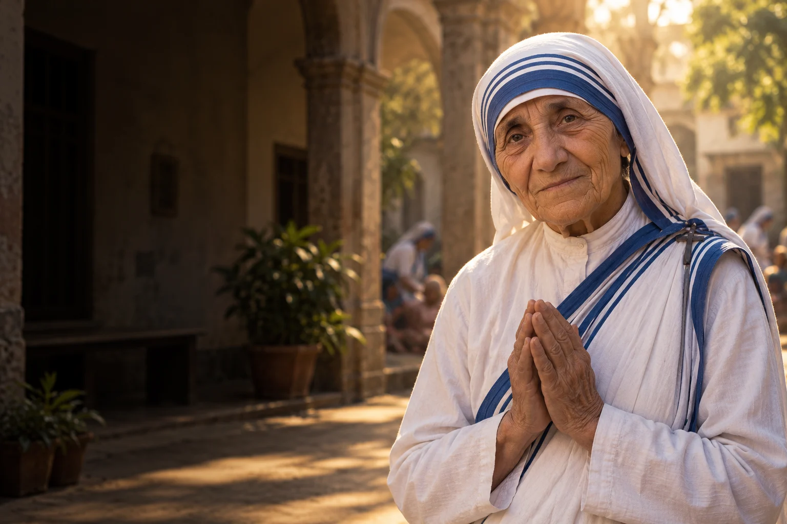

Zobacz człowieka
Zwróć dziś uwagę na osobę, której potrzeby łatwo przeoczyć w codziennym pośpiechu.

1910–1997
Obchód liturgiczny: 5 września
Założycielka Misjonarek Miłości, służących osobom ubogim i opuszczonym.
Założycielka Misjonarek Miłości. Jej droga prowadziła od szkoły prowadzonej przez siostry loreto do posługi ludziom żyjącym na ulicach Kalkuty.
Poznaj historię jej życia →Wierność małym gestom może wyrastać z uważnego spotkania z potrzebą konkretnego człowieka.
Refleksja redakcji W Modlitwie.Narodziny Anjezë Gonxhe Bojaxhiu.
Wyjazd do Irlandii i wstąpienie do zgromadzenia.
Rozpoczęcie pracy poza klasztorem loreto.
Powstanie Misjonarek Miłości.
Światowe uznanie jej działalności.
Papież Franciszek ogłasza Matkę Teresę świętą.
 Współczesne wyobrażenie artystyczne.
Współczesne wyobrażenie artystyczne.Około 3 min czytania · 5 rozdziałów
Anjezë Gonxhe Bojaxhiu urodziła się w 1910 roku w Skopju, w albańskiej rodzinie katolickiej. W wieku osiemnastu lat opuściła rodzinny dom i udała się do Irlandii, by wstąpić do zgromadzenia sióstr loreto. Przygotowywała się do pracy misyjnej i przyjęła zakonne imię Teresa. Wkrótce wyjechała do Indii, które stały się miejscem jej dalszego życia.
Jej wyjazd oznaczał rozłąkę z rodziną i wejście do międzynarodowej wspólnoty zakonnej. Formacja w Irlandii przygotowała ją do posługi w Indiach. Życie misyjne miało obejmować zarówno nauczanie, jak i codzienne uczestnictwo w modlitwie oraz pracy wspólnoty.
W 1937 roku złożyła śluby wieczyste, a jej zakonne życie w Indiach trwało przez kolejne sześć dekad. Spoczywa w domu macierzystym Misjonarek Miłości w Kalkucie, odwiedzanym przez osoby różnych wyznań.
W Indiach Teresa odbyła formację zakonną, a następnie uczyła w szkole św. Marii w Kalkucie. W 1937 roku złożyła śluby wieczyste. Przez lata pracowała z uczennicami, a w 1944 roku została dyrektorką szkoły. Za murami placówki widziała warunki życia wielu ubogich mieszkańców miasta; doświadczenie to stopniowo nabierało znaczenia w jej drodze.
W szkole Teresa spędziła około dwudziestu lat. Poznała tam osoby, które później przyłączyły się do jej nowej inicjatywy. Doświadczenie nauczycielskie i organizacyjne było częścią jej drogi, zanim zaczęła pracę poza zgromadzeniem loreto.
Podczas podróży pociągiem do Darjeeling we wrześniu 1946 roku Teresa przeżyła wezwanie do służby najuboższym. Było to jej osobiste doświadczenie religijne, które rozeznawała z przełożonymi. Po uzyskaniu zgody w 1948 roku opuściła klasztor loreto. Przeszła krótkie przygotowanie medyczne i rozpoczęła pracę w ubogich dzielnicach Kalkuty, odwiedzając rodziny i pomagając chorym.
Po odejściu ze szkoły zamieszkała początkowo u Małych Sióstr Ubogich. Odwiedzała rodziny, pomagała dzieciom i ludziom chorym. Początki były skromne: nowa działalność rozwijała się stopniowo, wraz z dołączaniem kolejnych osób i organizowaniem miejsc pomocy.
Do Teresy zaczęły dołączać inne kobiety, także jej dawne uczennice. W 1950 roku powstało zgromadzenie Misjonarek Miłości. Siostry organizowały opiekę dla osób opuszczonych, chorych i umierających. Z czasem wspólnoty powstawały w kolejnych krajach. Widocznym znakiem zgromadzenia stało się białe sari z niebieskim obramowaniem.
Wspólnota powstała jako zgromadzenie na prawie diecezjalnym. Łączyła modlitwę ze służbą ludziom potrzebującym. Praca jej członkiń wykraczała później poza Kalkutę i Indie, choć historia założenia pozostaje związana z konkretnymi ulicami i potrzebami miasta.
W 1979 roku Matka Teresa otrzymała Pokojową Nagrodę Nobla. Jej działalność była szeroko znana, a równocześnie oceniana z różnych perspektyw, także pod kątem warunków opieki. Zmarła w Kalkucie w 1997 roku. Jan Paweł II beatyfikował ją w 2003 roku, a Franciszek kanonizował w 2016. Od 2025 roku wspomnienie 5 września znajduje się w ogólnym kalendarzu rzymskim.
Przy ocenie dziedzictwa Matki Teresy warto rozróżnić jej własną motywację religijną od oceny konkretnych standardów opieki. Sama pamięć o świętej zachęca do pytania, jak najlepiej towarzyszyć ludziom cierpiącym i zapewniać im godną pomoc.
Zwróć dziś uwagę na osobę, której potrzeby łatwo przeoczyć w codziennym pośpiechu.

Wybierz konkretną pomoc, którą możesz zaoferować komuś samotnemu lub choremu.

Sprawdź, jak lokalna organizacja pomaga osobom w kryzysie i czego rzeczywiście potrzebuje.
Ojcze nasz, któryś jest w niebie, święć się imię Twoje; przyjdź królestwo Twoje; bądź wola Twoja jako w niebie, tak i na ziemi. Chleba naszego powszedniego daj nam dzisiaj; i odpuść nam nasze winy, jako i my odpuszczamy naszym winowajcom; i nie wódź nas na pokuszenie, ale nas zbaw ode złego. Amen.
Tradycyjny tekst modlitwy; utrwalony polski wariant.Ojcze nasz →